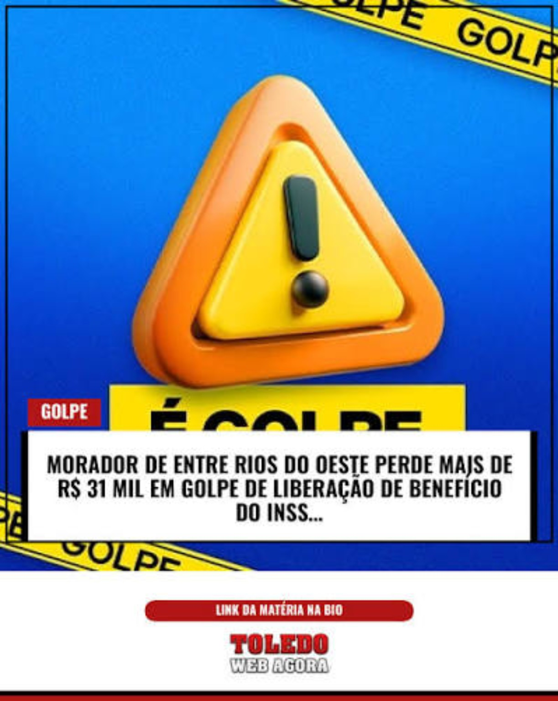

Parecer do Vigia
VERDE
Baixo riscoA classificação não aparece sozinha: o resultado vem acompanhado dos sinais que justificam a leitura.
confiabilidade do endereçodomínio compatível com a marca analisada
OKO Checa aí junta análise, registros e pessoas para ajudar você a descobrir se um site merece confiança antes de entregar dados, dinheiro ou atenção.
A classificação não aparece sozinha: o resultado vem acompanhado dos sinais que justificam a leitura.
Urgência, promessa fácil, pagamento antecipado e páginas que imitam marcas conhecidas são motivos para desacelerar.
Você pode consultar um endereço, pedir uma análise automática ou levar a dúvida para a comunidade. Cada parte responde a uma etapa diferente da verificação.
Registros de domínios, ocorrências, padrões de golpe e sinais que ajudam a comparar uma oferta com referências conhecidas.
Analisa o endereço e organiza os indícios em um parecer legível, com verde, amarelo ou vermelho e explicação do porquê.
Perguntas, respostas e voluntários ajudam quando o contexto é maior que o que uma análise automática consegue enxergar.

Um exemplo de como uma situação aparentemente oficial pode ser usada para criar urgência e obter dinheiro ou dados.
Não é apenas o site que importa: identidade, contato e forma de pagamento fazem parte do contexto.
Antes de transferir dinheiro, vale conferir a origem do anúncio e a identidade de quem está vendendo.
O usuário escolhe receber a classificação do Vigia normalmente na tela ou usar a pulseira como sinal físico da mesma leitura.